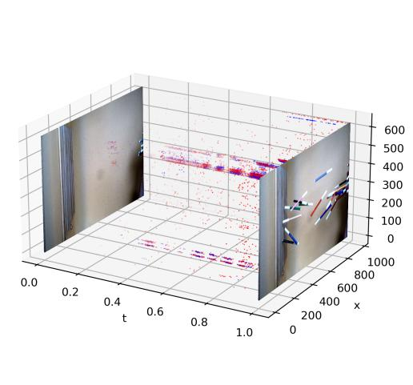
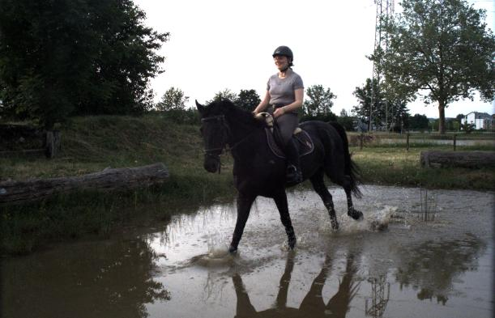

事件相机视频生成：LongE2V 与视频扩散模型
为什么你要懂这个
假如团队要去评估一个"只靠事件相机就能还原高速视频"的方案，我们得先知道这类技术现在做到什么水平。事件相机输出的是一串记录"亮度变化"的数据，常规图像算法根本没法直接处理。用老式回归方法把它还原成视频，画面会糊、细节会丢；直接套用现成的视频生成模型，长视频又会有颜色漂移。不懂这里面的差别，选型时就会用错基准，甚至误以为事件相机必须搭配普通相机才能用。
一句话说清
事件相机输出的稀疏信号，可用视频扩散模型还原成高清、稳定、可预测的视频。
打个比方
事件相机像聚会里只记"谁动了"的速记员。普通相机每分钟拍一张完整合影，它却只在本子上一行行写："第 3 秒，左边的人往右挪了半步，光线变暗"；第 5 秒又记一行。聚会结束，你手里没有一张照片，只有几百行这样的笔记。视频重建，就是靠这些笔记把整场聚会"脑补"成一段连续的录像。
这个比方哪里不成立：事件相机的笔记带精确到微秒的时间戳，密集时每秒几十万条，信息量并不少，不是"偶尔记两笔"。另外，静止不动的部分完全没有笔记，所以光靠事件信号还原不出静止场景的外观，实际使用时往往需要一张起始帧来补上"画面长什么样"，事件只管"怎么动"。
拆开讲
事件相机到底是什么，为什么普通相机拍不了高速画面？
普通相机在快门打开的瞬间累积光线，物体动得太快就会拖出运动模糊。事件相机反过来：每个像素独立工作，只在自己感受到亮度变化时输出一条事件，这条事件带坐标、时间，以及极性（变亮还是变暗），时间精度到微秒。所以它能看清高速运动，也有很高的动态范围（暗处和亮处同时看清）。代价是它没有颜色，也没有亮度的绝对值，只有变化。这种输出对传统视觉算法不友好，想把它变成人能直接看的视频，需要专门的方法。
一个模型怎么同时处理重建、预测、插值三件事？
论文的关键思路是：把三件事统一看成"在事件信号引导下生成视频"。预训练的视频扩散模型（一种从随机噪声逐步还原出干净画面的生成模型）已经知道"正常视频长什么样"，论文做的事只是教会它读懂事件信号。输入不同，任务就不同：只给事件流，就是重建，从零把画面还原出来；给一张起始帧加事件流，就是预测，算出后面发生什么；给起始帧、结束帧和两段事件流，就是插值，补出中间帧。一个架构，三种用法，而不是为每个任务各训一套模型。

长视频为什么容易越生成越乱，怎么稳住？
生成模型是一段一段产出的，下一段要用上一段的结尾当开头。如果模型生成的画面带一点小误差，这个误差会被带进下一段并放大，几十段之后画面就漂移了，典型表现是颜色逐渐偏掉。论文用两个机制解决：自回归展开（训练时故意把模型自己生成的帧当成下一段的历史输入，让它提前适应自己的错误）和自适应上下文切换（每段生成完，看当前画面有多少注意力放在历史画面上，如果历史已经没什么参考价值，就丢弃这版、换新上下文重新生成）。论文里这个判断阈值取 0.05 的注意力权重。
高帧率插帧难在哪，论文怎么解决正反两条时间线对不齐？
插值通常同时从起始帧往前、从结束帧往后各生成一半，再合成中间帧。存储压缩视频用的 3D VAE（把视频压成紧凑表示的编解码器）会按时间做压缩，导致"在压缩空间里直接把时间倒过来"和"先倒过来再压缩"结果不一样，两条时间线就对不齐，叠出来有鬼影。论文的解法是：把正反向生成结果都解码回画面，在画面层面倒转时间，再重新编码，让两条线在同一个空间里对齐；对齐过程损失的细节，再用另一条线补回来。
再深一点
这一节写给工程，业务读者可以跳过。
基础架构：模型基座用 CogVideoX I2V，3D VAE 做 4 倍时间压缩和 8 倍空间压缩。事件流按 B=3 个时间箱累加成事件体素网格，正好对齐 VAE 的 3 通道输入。训练时第一投影层的权重从 2×C_vae 扩展到 3×C_vae 以容纳事件通道，这一层全量微调；DiT 主干用 LoRA（低秩适配，秩 r=64）高效微调。生成 chunk 为 49 帧、720×480，训练和推理都维持 20 帧上下文，自回归展开做了 3 轮。首帧 latent 加了 5% dropout，20% 概率附带文本提示，由此获得文本引导上色的能力。

长序列稳定：自回归展开分两步走，先用真实上下文帧训练到收敛，再在训练集上做推理，把模型自己生成的帧替换成上下文继续微调，循环 3 轮，强迫模型适应自身误差。推理时用自适应上下文切换：把去噪后的 latent 重新送入 DiT，提取当前 token 对上下文 token 的平均注意力权重 μ_attn，阈值 τ=0.05。低于阈值说明历史参考价值低，丢弃当前生成、更新上下文、重新生成一次（单次重试机制）。
插值对齐：问题根源在于 3D VAE 有 4 倍时间压缩，压到 latent 空间后"翻转时间"不再是线性操作。论文的 Reencoding Alignment 把正反两向的去噪结果都解码回像素、在像素域翻转、再重新编码，得到对齐后的 latent。解码重编码会丢信息，Cross Residual Correction 计算原 latent 与重编码 latent 的残差，把正向残差注入反向、反向残差注入正向，再经 alpha blending 融合。插值全程零样本，复用重建和预测的权重，评估时一次插 31 帧。
关键数字：重建任务在 HQF 数据集上 LPIPS 0.240，对比 HyperE2VID 0.257、FireNet 0.486。预测任务全面压过 VDM-EVFI：ECD 上 PSNR 24.40 对 20.33，MVSEC 上 18.18 对 15.46，HQF 上 LPIPS 0.229 对 0.520。插值零样本在 BS-ERGB 上 LPIPS 0.124，优于有监督训练的 CBMNet-Large 的 0.170 和 TLXNet+ 的 0.226；但 BS-ERGB 上 PSNR 24.40 略低于 CBMNet-Large 的 24.59，说明它赢在感知质量，不是像素级保真。消融里最值得注意的是：去掉预训练先验、从零训练扩散主干，HQF 上 PSNR 只有 10.26、SSIM 0.094，基本是噪声；去掉 Reencoding Alignment，插值 PSNR 从 24.40 掉到 20.58；去掉 Cross Residual Correction，LPIPS 从 0.124 升到 0.161。
和同类方案的差别与边界：回归式方法（E2VID、FireNet、HyperE2VID）快但存在"回归到均值"问题，生成式扩散模型清晰但计算重，论文没有给出推理耗时、参数量和显存占用，只在未来工作里提到要加速推理。事件流没有绝对亮度信息，评测时所有方法的输出都要先和真值对齐全局亮度才算公平，实际部署时亮度是一个不确定量。Event Voxel Density Augmentation 用随机缩放（上限 2 倍原分辨率）加随机裁剪来缓解不同传感器分辨率带来的体素密度差异，但只是缓解，不是完全消除。训练只用 BS-ERGB 一个数据集，测试最长序列到 MVSEC 的 2740 帧和 HQF 的 2430 帧。
跟我们业务什么关系
目前和我们的业务没有直接关系，我们不产线质检，不做机器视觉。放在这里是因为两层：一是组内做视频大模型工程评估时，会遇到同一类问题，长序列生成的漂移、微调成本、零样本能力边界。LongE2V 对漂移的处理（让模型适应自己的错误）和只微调一层投影加 LoRA 的做法，是我们以后选视频生成模型时可以直接借鉴的判断依据。二是如果将来要做"给低帧率素材补高帧率"或"高动态内容重绘"这类内部工具，本文的零样本插值路径就是现成候选。现在我们的做法是：还没有把这类模型纳入评估清单，遇到视频生成需求直接选用开源或商业模型，不做机制层面的对比。代价是选型时只看演示效果，不知道长序列和插值场景下哪些坑会爆。
你现在能做什么
- 打开论文项目页（素材来源里有链接），确认模型权重是否公开可下载。完成标志：把"开源或未开源"的判断和链接记录到团队知识库。
- 把论文表 1、表 2 中三项任务的 PSNR、SSIM、LPIPS 对比整理成一页笔记，放进团队 wiki。完成标志：笔记包含至少五个方法、三组数字的对比。
- 如果组里近期有视频生成相关的讨论，把"长序列漂移"和"自回归展开"两个词条加进讨论提纲。完成标志：提纲里出现这两个词，并各有一句话解释。
自测
事件相机直接输出的数据是什么？
A. 带颜色的完整图像序列 B. 由坐标、时间、极性组成的异步事件流 C. 深度图序列 D. 语义分割结果
答案
B。事件相机只在像素感受到亮度变化时输出一条事件记录，不直接给图像。LongE2V 的帧插值功能是怎么训练出来的？
A. 用专门的插值数据集单独训练 B. 只训练了重建和预测，插值靠零样本推理实现，没有额外微调 C. 用对抗生成网络优化 D. 用强化学习练出来
答案
B。论文明确说插值没有微调，用的是和重建、预测相同的权重。长视频预测时，自回归展开主要解决什么问题？
A. 减少模型参数量，降低显存占用 B. 消除单帧画面的压缩噪声 C. 弥合训练时用真实帧、推理时用自己的生成帧之间的差距，从而抑制误差累积 D. 让模型输出更高的分辨率
答案
C。它通过把模型自己的预测当训练上下文，让模型适应自身错误。
术语表与来源
术语表
- 事件相机：只记录场景亮度变化的传感器，每个事件带坐标、时间和变亮或变暗的标志。
- 事件流：事件相机输出的一系列异步记录，不是连续的图像帧。
- 事件体素：把一段事件按时间分箱累加成的网格，方便神经网络处理。
- 视频扩散模型：从随机噪声逐步去噪生成视频的生成式模型。
- 3D VAE：将视频压缩成紧凑潜变量表示的编解码器，时间维度会做压缩。
- LoRA：低秩适配，微调大模型时只训练少量额外参数。
- 自回归展开：训练中把模型自己生成的帧当作下一段上下文，逼模型适应自己的错误。
- 自适应上下文切换：根据注意力权重动态决定是否更新历史上下文。
- 零样本：不为此任务训练，直接用已有能力完成。
来源
- 论文 LongE2V（arXiv 2607.08770），SIGGRAPH 2026，公开可获取，2026-07-09。
修订记录
| 日期 | 改了什么 | 为什么 | 谁 |
|---|---|---|---|
| 2026-08-04 | 下架，页面保留但标为已作废 | 站上只保留手册，散篇下架 | 工程 |
| 2026-08-03 | 初稿发布 | 首次发布 | 工程 |